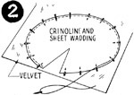

1952—How to Make Hats
by Ruby Carnahan
Beaded Velvet Beret
- Use beret pattern, page 85
- Beret beading pattern.
MATERIAL REQUIRED
- 3/4 yard of rayon velvet. Millinery velvet, taffeta, faille or felt may also be used for beaded berets.
- 3/4 yard of crinoline. If beret is to be made of felt, the crinoline is not required.
- 1 sheet of sheet wadding.
- Small piece of silk elastic net.
MARKING AND CUTTING
Place pattern on crinoline. Using tailor's chalk or pencil, mark around pattern on crinoline and cut out. (Illus. 1) Pin and baste crinoline to sheet wadding and cut out.
(Illus. 2) Place sheet wadding and crinoline on wrong side of velvet with sheet wadding next to the velvet. Baste sheet wadding and crinoline to the velvet and cut out.
SEWING
(Illus. 3) Sewing through all three pieces (velvet, crinoline and sheet wadding), baste dart in top of beret. Stitch dart and steam seam open.
 (Illus. 4) Baste
seam in back of bottom part of beret. Stitch and steam seam open. Match markings.
(Illus. 4) Baste
seam in back of bottom part of beret. Stitch and steam seam open. Match markings.
Place right sides of top and bottom of beret together and baste around edge (Illus. 5), stitch. Turn beret right side out and steam seam around brim edge until smooth and even.
(Illus. 6) Bead beret before lining.
BEADING
Trace beading pattern on tissue paper and cut out. Pin plain edge of pattern on edge of beret with design edge pointing toward the center and starting in back. If beret is cut and seamed exactly like pattern, twelve designs fit around brim. Pin design pattern on top edge of beret and baste around design.
Baste design on underside of beret to correspond with top. Sew any kind of beads desired on beret, following design basting threads.
LINING
Lay same beret pattern on taffeta, mark around pattern and cut out. Seam dart in top part of beret and stitch seam in bottom part. Place right sides of top and bottom together and stitch around edge. Slip lining into beret and baste to headsize.
FINISHING
(Illus. 7) Finish headsize with a ribbon headband. Do not swirl ribbon. Dampen ribbon slightly and place beret on block until ribbon headband dries.
Instructions for beret headband page 46.